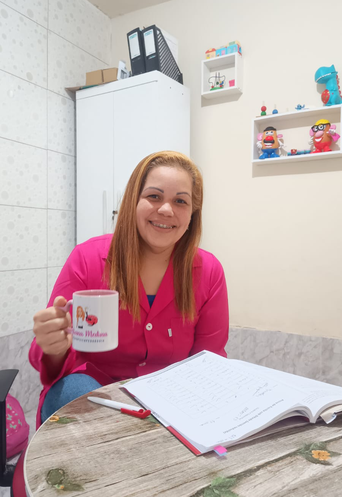
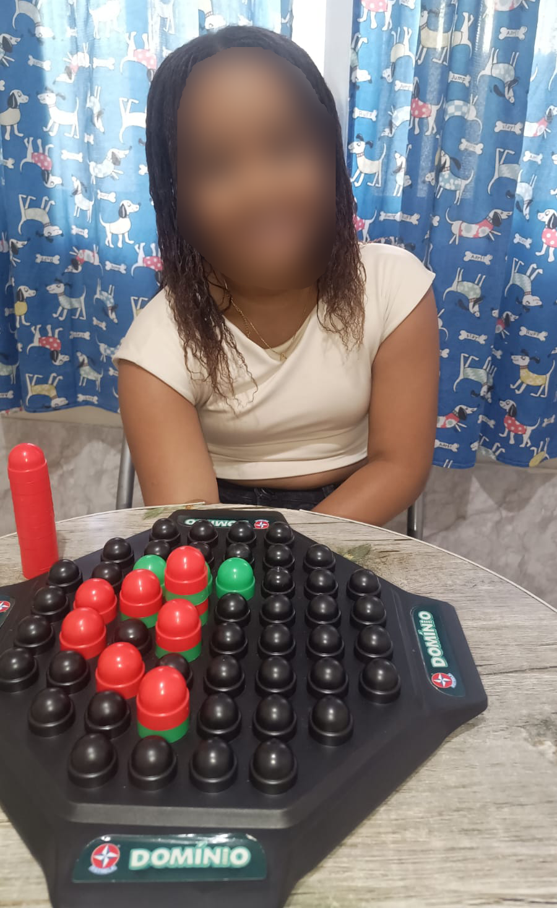
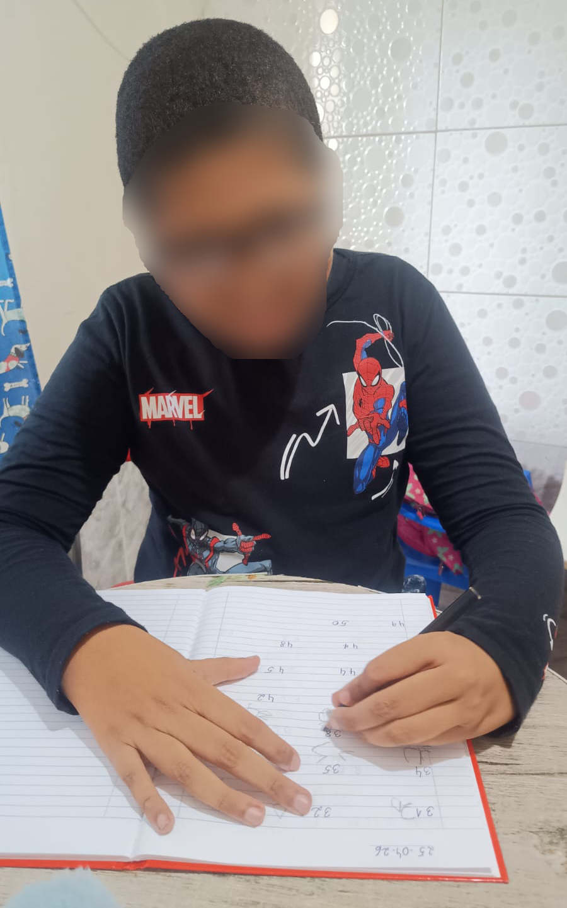
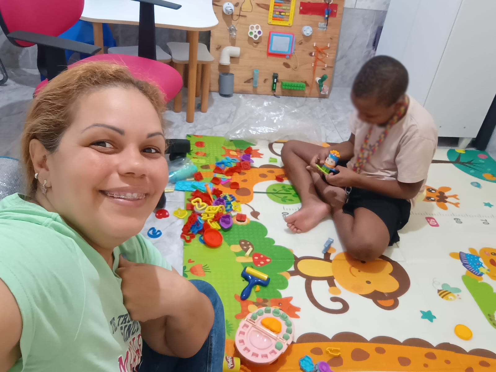
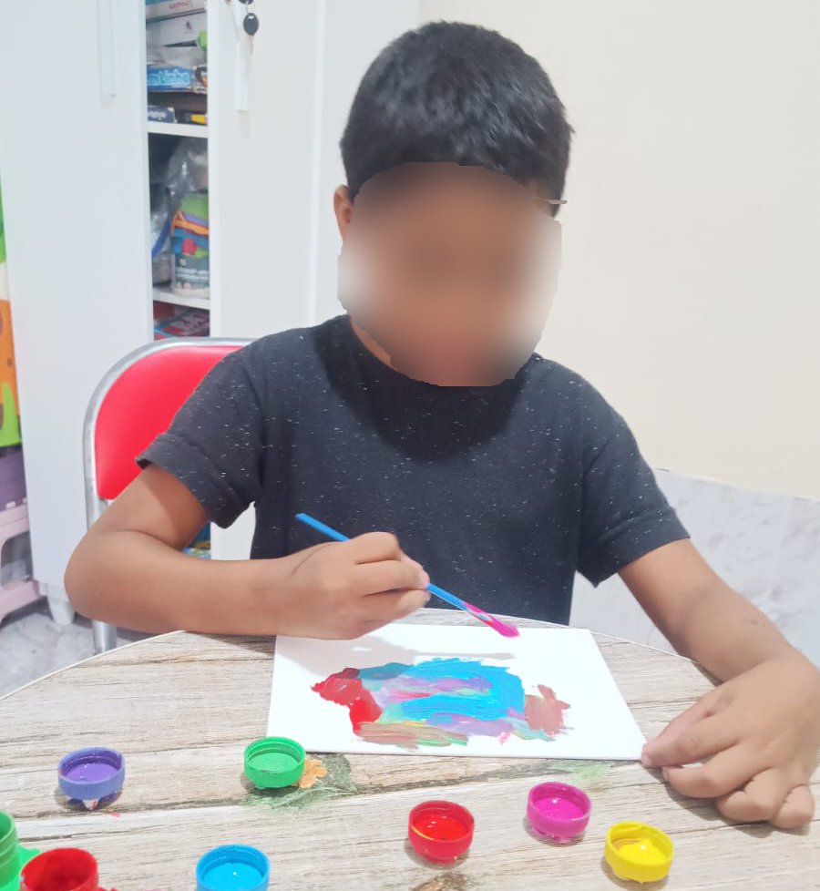
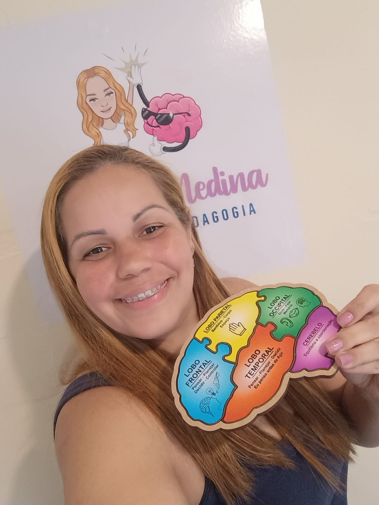
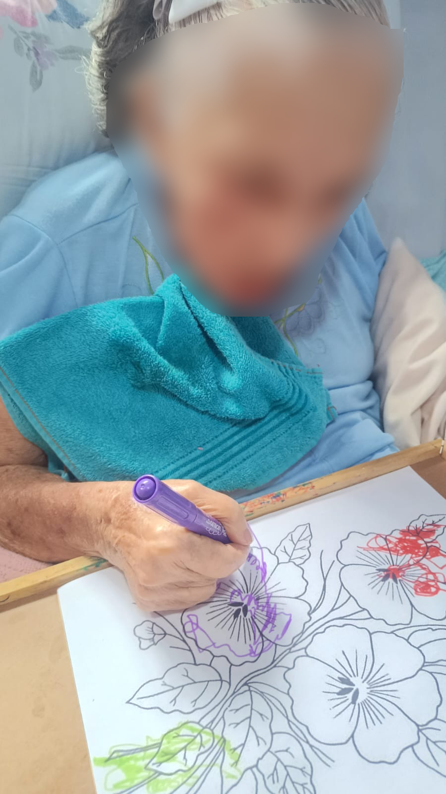

Avaliação baseada em evidências
Instrumentos validados e protocolos reconhecidos para entender, com precisão, como seu filho aprende.
Psicopedagogia clínica e escolar
Avaliação e intervenção psicopedagógica conduzidas com escuta, método e ciência — para que seu filho aprenda no ritmo que é dele, com confiança e leveza.
+300 famílias atendidas +15 anos de experiência
Cada conquista merece ser celebrada.
Por que escolher um acompanhamento especializado
Um processo estruturado, transparente e acolhedor — do primeiro contato ao acompanhamento contínuo.
Instrumentos validados e protocolos reconhecidos para entender, com precisão, como seu filho aprende.
Cada plano é desenhado a partir das necessidades reais da criança — nada de fórmulas prontas.
Orientação constante para que vocês entendam cada etapa e se sintam parte do processo.
Reavaliações periódicas para ajustar o plano conforme a evolução da criança.
Comunicação direta com educadores para que a aprendizagem seja consistente nos dois ambientes.
Tecnologia e método com a sensibilidade de quem entende o tempo de cada criança.
Sobre a Neuropsicopedagoga
Neuropsicopedagoga clínica e institucional, dedicada a transformar a relação entre crianças, aprendizagem e família. Minha missão é simples: ajudar cada criança a descobrir o próprio caminho de aprender — com método, paciência e respeito ao tempo dela.
Formação e especializações
Formação acadêmica sólida e especializações voltadas ao desenvolvimento da aprendizagem, neurodesenvolvimento e intervenção clínica.
A formação multidisciplinar de Juliana Medina integra educação, linguagem, neurodesenvolvimento, comportamento e aprendizagem, proporcionando uma visão ampla das necessidades de cada paciente e contribuindo para intervenções mais individualizadas, acolhedoras e baseadas em evidências.
Áreas de atuação
Atendimento especializado, adaptado à idade e às necessidades específicas de cada criança.
Diagnóstico completo do perfil de aprendizagem da criança.
Plano terapêutico individual para desenvolver habilidades específicas.
Identificação e suporte para superar bloqueios na leitura, escrita e cálculo.
Estratégias específicas para fortalecer a leitura e a consciência fonológica.
Suporte para foco, organização e regulação da atenção no dia a dia.
Acompanhamento sensível às particularidades do espectro autista.
Apoio aos pais para compreender e participar ativamente do processo.
Articulação com a escola para alinhar estratégias pedagógicas.
Como funciona
Você nos chama pelo WhatsApp ou formulário e conta um pouco sobre a sua criança.
Conversa com a família para entender a história, as queixas e o contexto escolar.
Aplicação de instrumentos psicopedagógicos para mapear o perfil de aprendizagem.
Devolutiva detalhada e construção de um plano terapêutico individual.
Sessões regulares com reavaliações periódicas e orientação contínua à família.
O espaço
Espaço preparado para avaliações, intervenções e atividades voltadas ao desenvolvimento da aprendizagem em diferentes fases da vida.







Avaliações no Google
Avaliações reais ajudam outras famílias a conhecerem o cuidado, a escuta e o compromisso presentes em cada atendimento.
“A Juliana é uma profissional maravilhosa e graças a ajuda dela meu filho tirou o primeiro 10 em matemática e também é muito carinhosa e dedicada.”
“A Juliana é uma profissional muito atenciosa, meu filho se sente super a vontade com ela. O ambiente é acolhedor e dispõe de muitos recursos pedagógicos. Nota dez.”
“Profissional extremamente capacitada, com técnicas para cada caso em especial. Que busca o melhor desenvolvimento para nossas queridas crianças. Diferenciada no mercado, indico de olhos fechados. A MELHOR e com as melhores técnicas de desenvolvimento.”
“Maravilhosa, ótima profissional, muito dedicada. Grata pelo seu trabalho e carinho com o meu filho.”
“Grande profissional, com carisma e uma imensa capacidade de orientar e ajudar as crianças.”
“Profissional dedicada , que ama oq faz , é o diferencial dela...”
“Muito dedicada e responsável. Nota 10.”
“Maravilhosa e muito dedicada no que faz.”
“Maravilhosa!!!😍 Uma profissional excelente!😍 …”
“Juliana é ótimo está de parabéns.”
Já foi atendido pela Juliana? Sua avaliação ajuda outras famílias a encontrarem apoio especializado.
Dúvidas frequentes
Entenda as etapas da avaliação neuropsicopedagógica, localização em Duque de Caxias e modalidades de atendimento.
O consultório de Juliana Medina está localizado na Rua Rodrigo Otávio, 420, na Vila São Luís, em Duque de Caxias - RJ. O atendimento para avaliações e intervenções de crianças e adolescentes é presencial, com ambiente preparado e recursos pedagógicos lúdicos. Também oferecemos suporte e orientações familiares online, quando aplicável.
A avaliação é uma investigação técnica e detalhada para identificar como a criança processa a informação, mapeando funções cognitivas, atenção, memória e barreiras de aprendizagem (como TDAH, TEA, dislexia ou discalculia). A intervenção é o acompanhamento terapêutico contínuo que aplica estratégias personalizadas para superar essas dificuldades e estimular o potencial da criança.
O processo de avaliação clínica é estruturado em etapas: 1) Anamnese e entrevista com a família; 2) Sessões diagnósticas com a criança utilizando testes e atividades neuropsicopedagógicas padronizadas; 3) Contato com a escola (com autorização dos pais); e 4) Sessão de devolutiva com entrega de relatório psicopedagógico detalhado e plano de intervenção.
É recomendado buscar atendimento quando a criança apresenta: queixas frequentes da escola, dificuldade acentuada na alfabetização ou matemática, desatenção crônica, agitação e impulsividade (sinais de TDAH), lentidão na execução de tarefas, desmotivação ou suspeitas no neurodesenvolvimento (como TEA). O atendimento pode iniciar a partir da Educação Infantil e se estende até a adolescência e vida adulta.
Sim. O trabalho integrado com a escola é fundamental. Realizamos contato com a coordenação e professores para troca de informações e oferecemos orientações práticas para o Plano de Ensino Individualizado (PEI) e adaptações curriculares, além de emitir relatórios técnicos para compor investigações multidisciplinares com médicos (neuropediatras e psiquiatras).
Os atendimentos são somente particulares, garantindo tempo dedicado e avaliação individualizada.
Vamos conversar
Preencha o formulário com calma. Em até 1 dia útil entraremos em contato para conversar sobre os próximos passos.